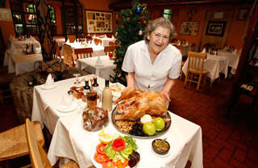

Quienes Somos
Hace más de 30 años la señora Agustina abrió un modesto y pequeño local de comida típica chilena. Hoy el restaurant tiene capacidad para más de 500 personas y el nombre de Doña Tina se reconoce en materia de carnes.
En un ambiente agradable y rústico a los piés de la cordillera, los comensales disfrutan de enormes platos de comida chilena al ritmo de la cueca. Los fines de semana, hay música en vivo.
Un lugar especial para celebrar con amigos o ir en familia a mantener una tradición nacional, comer hasta no poder más.
Los dos platos que la llevaron al éxito, fueron la "Plateada a lo Pobre" y el "Pastel de Choclo", en ambos tuvo que trabajar muchísimo para lograr la combinación de ingredientes perfecta. "Todas mis recetas van acompañadas de algún secreto de cocina que he ido descubriendo a través de muchos ensayos, por ejemplo, la Plateada tuve que hacerla 48 veces para obtener ese exquisito sabor de la carne que me caracteriza, es uno de mis platos de presentación", comenta.
No se puede dejar de hacer mención a otros platos estrella, como la Malaya, Arrollado, Pernil, Costillar, Filete, Lomo, que pueden ser acompañados con Papas fritas o cocidas, Puré picante, Arroz y Ensaladas. También destacan en la carta sus deliciosos Porotos Granados o Cazuelas de vacuno, ave o pavo, que son comidas tradicionales de nuestro país, pero preparadas con productos frescos de excelente calidad y con un toque muy personal de esta reconocida cocinera.
Cabe destacar, la constante preocupación que siempre ha caracterizado a Doña Tina por hacer sentir a los clientes como en casa, entregándoles una atención bastante personalizada.